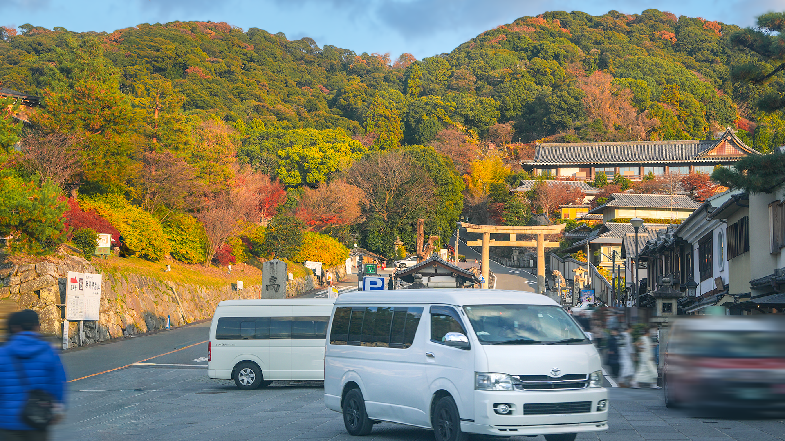
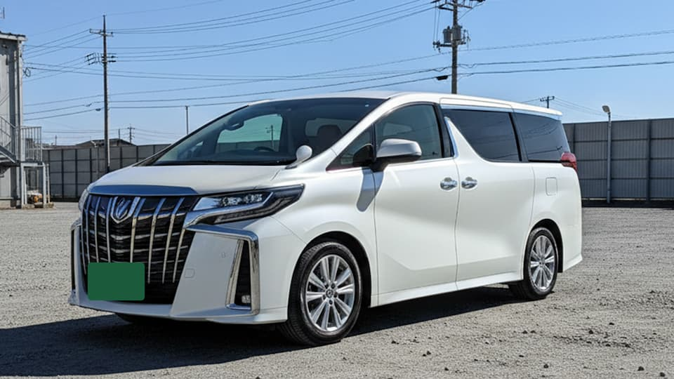
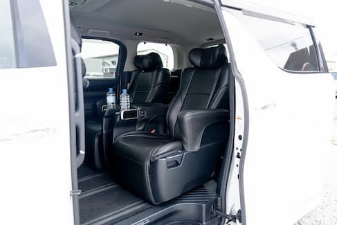
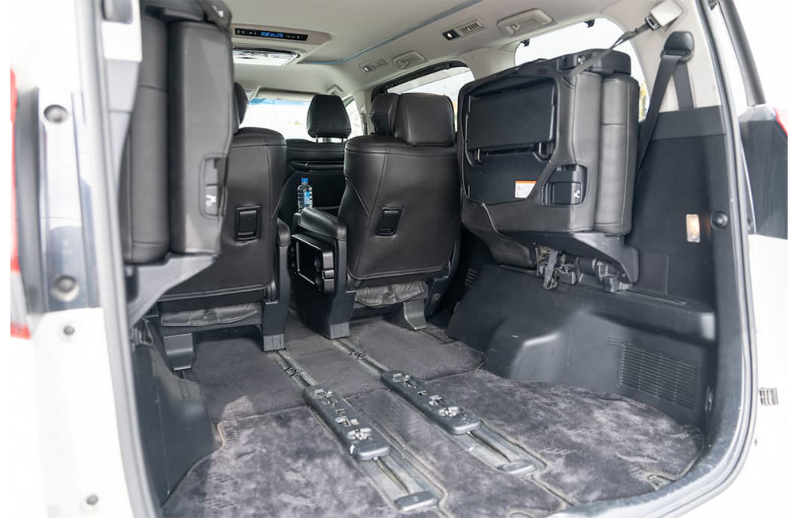
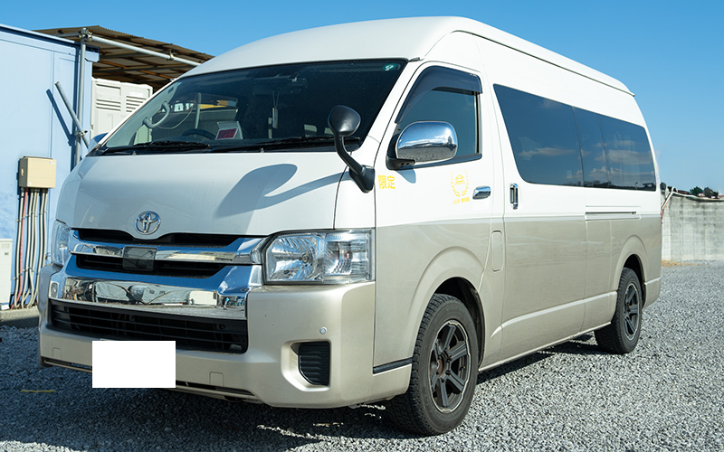
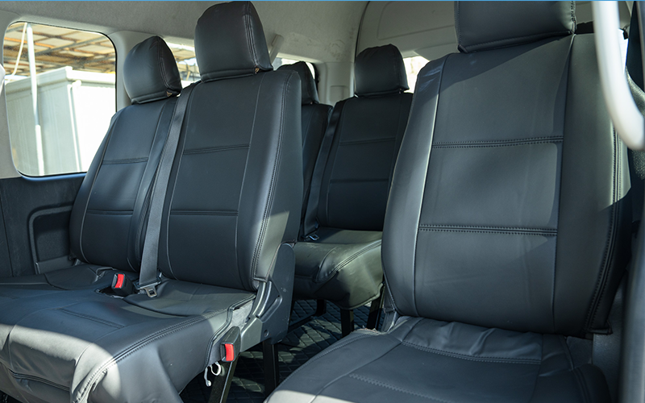
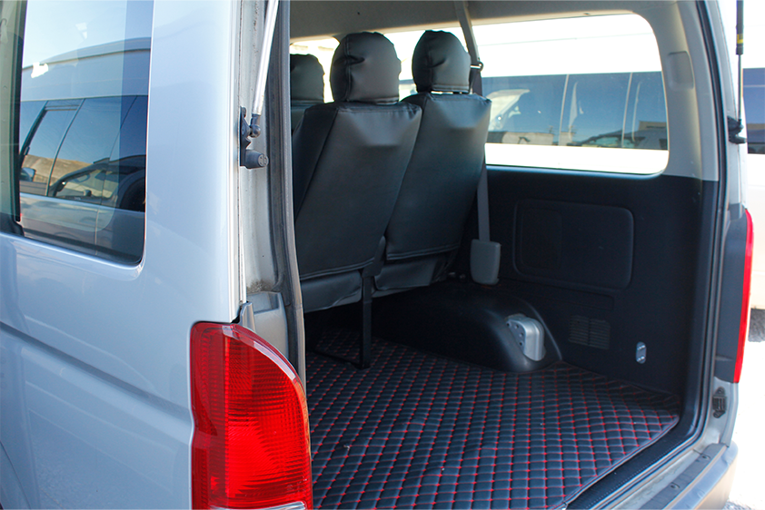
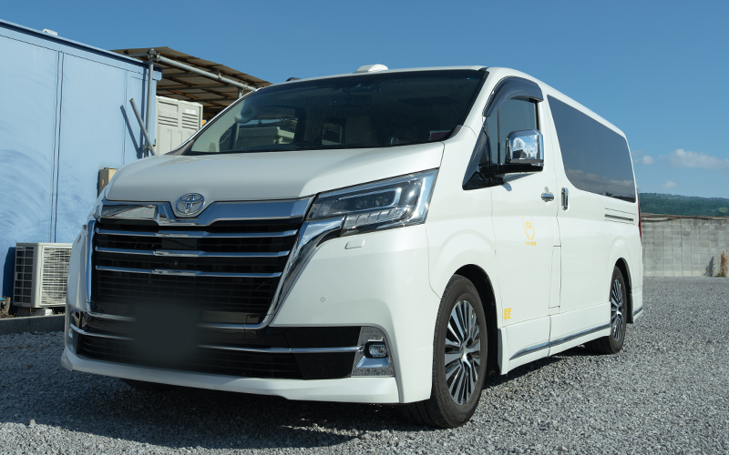
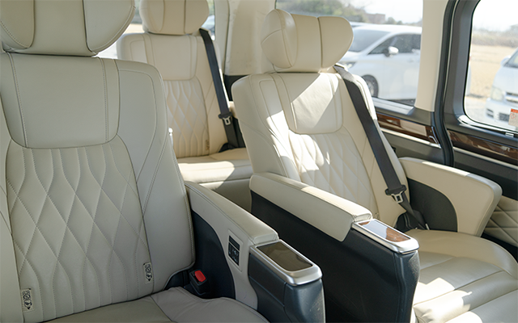
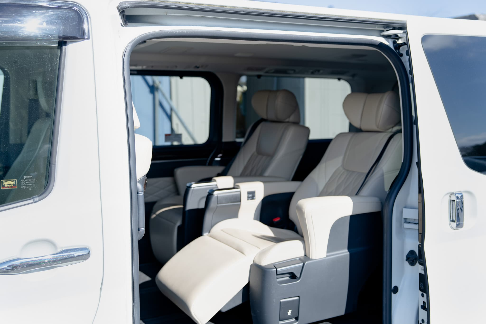

Airport Transfers
— Arrive relaxed, every time.
Comfortable door-to-door transfers between Kansai Airport, Osaka Airport, and your hotel or residence in Osaka. Stay connected and get back to work the moment you land.
ASOBI Co., Ltd. offers premium private chauffeur and transfer services throughout Japan. Whether you’re exploring with family and friends, travelling for business, or need a seamless transfer to the airport or cruise port — we tailor every plan to suit your needs. Our dedicated staff speak Japanese, English, and Chinese, supporting you from booking right through to your journey. Sit back, relax, and enjoy a truly special experience in Japan.
Premium door-to-door transfers for every journey. We offer tailored plans to suit your schedule and destination.
— Arrive relaxed, every time.
Comfortable door-to-door transfers between Kansai Airport, Osaka Airport, and your hotel or residence in Osaka. Stay connected and get back to work the moment you land.

Port / Station— Where public transit can’t reach.
From Kobe Port to Osaka Nanko and beyond — we cover destinations that are difficult to reach by public transport. Door-to-door service, no matter how much luggage you have.
— Japan’s highlights in a single day.
Kyoto, Wakayama, Nara and more — explore Japan’s most beloved destinations on a private day trip. Our knowledgeable drivers help you make the most of every moment.
— Your schedule, your pace.
Business meetings, shopping, dinner reservations — we build your day around your itinerary. A private city charter tailored entirely to you.
Simply send us a message with your preferred dates, destination, and number of passengers. We’re available in English, Japanese, and Chinese.
Our team reviews your request and presents the best plan with a clear quote. Once you’re happy, we’ll confirm your reservation.
Your driver will be waiting at your specified pickup location. Sit back, relax, and enjoy a smooth, comfortable journey.
Choose the vehicle that suits your group size and itinerary. Child seats are available on request for all vehicles (advance booking required).
Recommended for 2–4 passengers



※ Meet & Greet Service 3,000 JPY
View full detailsRecommended for 5–9 passengers



※ Meet & Greet Service 3,000 JPY
View full detailsRecommended for 5–8 passengers



※ Meet & Greet Service 3,000 JPY
View full detailsA hire car (chauffeur service) is a fully reservation-based private transfer. A dedicated driver operates according to your schedule and route, with a fixed fare confirmed before departure — no extra charges for traffic delays. You'll have the vehicle entirely to yourself, your family, or your group.
We generally ask for bookings to be made at least one day in advance. For same-day requests, availability may allow us to accommodate you — please contact us by email or LINE as soon as possible.
Yes, you can select from the Toyota Alphard, Hiace, or Granace. Child seats are available with advance notice. Wheelchair accessibility varies by vehicle and situation — please let us know your requirements at the time of booking.
We primarily serve the Osaka area, including airport transfers from Kansai Airport and Itami Airport, as well as day trips to Kyoto, Nara, Wakayama, and surrounding regions. Please get in touch for destinations outside these areas.
Cancellations made more than 2 days before the service date are free of charge. Cancellations the day before incur a 50% fee, and same-day cancellations are charged at 100%. Full details are provided in the booking confirmation.
We accept advance bank transfer and credit card payment. For corporate contracts, invoice payment (paid later) is also available. Please contact us to discuss.
Changes to dates, routes, or passenger numbers can be accommodated subject to availability. Please contact us by email or LINE as early as possible. Last-minute changes are welcome — just reach out and we'll do our best.
Yes. Every private chauffeur service is planned around your specific travel dates, destinations, and preferred pace. Route adjustments can be made right up until the day of departure — just let us know in advance.
Yes. English- and Chinese-speaking chauffeurs are available upon request. Please specify your language preference at the time of booking so we can confirm the arrangement in advance.
Standard service covers up to 10 hours per day. If your itinerary requires additional hours or longer travel distances, a separate quote will be provided based on the specifics.
We operate Toyota Alphard, Hiace, and Granace vehicles. The appropriate model is selected based on your group size, luggage volume, and route requirements. All vehicles hold valid commercial operation licenses in Japan.
Yes. With our Chauffeur-Driven Tour Service, experienced drivers who know the area well can share local insights and recommendations along the way, much like a tour guide. English- and Chinese-speaking staff are also available. If you would like a dedicated professional guide for in-depth visits, we can help arrange one separately.
Pricing is determined by vehicle type, service duration, route distance, and the number of days required. An exact quote is provided after we review your itinerary — please contact us with your travel details to get started.
To ensure a smooth booking, please include your preferred date and time,
number of passengers, destination and luggage.